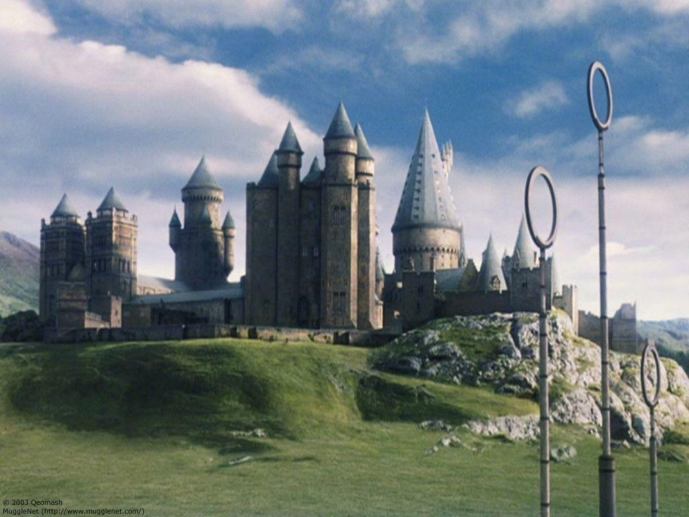
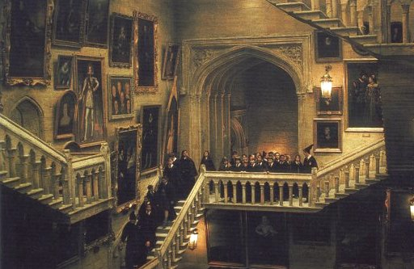

Welcome to Hogwarts University
About Us
Hogwarts is divided into four houses, each bearing the last name of its founder:
- Godric Gryffindor
- Salazar Slytherin
- Rowena Ravenclaw
- Helga Hufflepuff
Each house also has its own Quidditch team that competes for the Quidditch Cup. These two competitions breed rivalries between the houses. Houses at Hogwarts are living and learning communities for their students.
The primary mode of transport to Hogwarts is the Hogwarts Express that students take at the start of each school year.
Students board the train from the hidden Platform 9¾ at King's Cross station in London.
The train arrives near Hogwarts, some time after nightfall.
Living in Hogwarts

The day begins at Hogwarts with breakfast in the Great Hall. Students sit at their own House table and can eat and socialise,
or finish homework. The Headmaster or Headmistress eats with the professors at the High Table placed at the far end of the hall.
During breakfast, owls bring in the student's post, generally consisting of The Daily Prophet, letters from parents or friends,
or packages from home. A bell signals the start of the first class of the morning at 9 am.
There are two long morning classes with a short break in between them for students to get to their next class.
After lunch, classes resume at 1 pm, and there is a break around afternoon teatime before another class period.
The classes are about one hour in length, with occasional double periods lasting two hours.
Classes end around five o'clock. First-year students get Friday afternoons off, while sixth- and seventh-year
students have several free periods during the week. In the evening, students eat their dinner in the Great Hall,
after which they are expected to be in their common rooms.